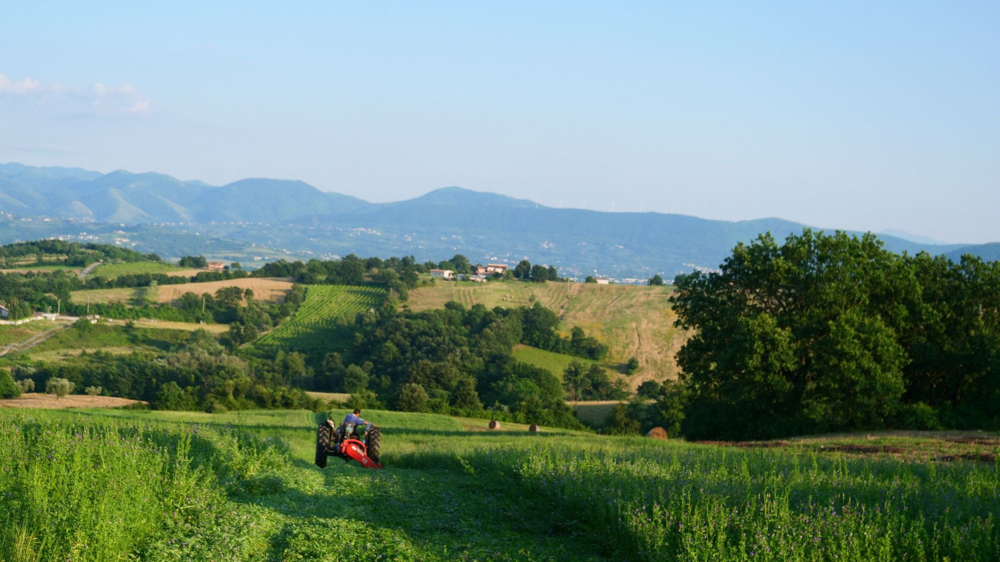

CANESTRINI
Storia, arte
e famiglia.
In evidenza / 2026
Canestrini Wine
Un sito che racconta una famiglia, il suo territorio e il mondo dietro ogni bottiglia.
RestylingSito vetrinaCatalogo vini
In fase di finalizzazione con l’attività.